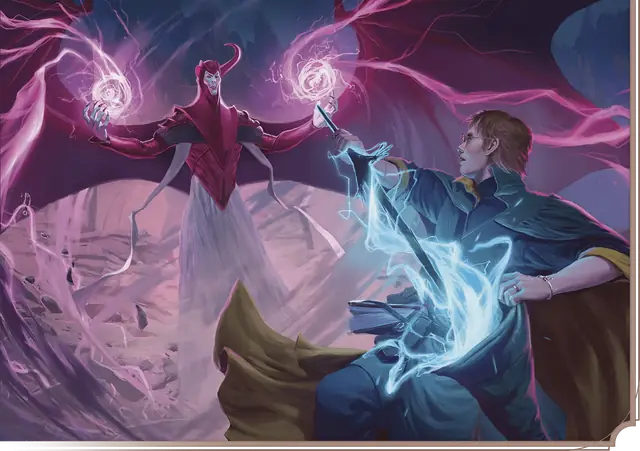

Клинок разрушения
Blade of Disaster
9 уровень, Призыв

Время сотворения Бонусное действие
Дистанция 60 футов
Компоненты В, С
Длительность Концентрация, вплоть до 1 минуты
Классы Волшебник, Колдун, Чародей
Вы создаёте пространственный разлом в форме клинка длиной 3 фута. Разлом появляется в пространстве в пределах дистанции на ваш выбор и существует, пока заклинание действует. Когда разлом появляется, вы можете немедленно совершить две рукопашных атаки заклинанием, каждая по существу или объекту в пределах 5 футов от разлома. При попадании цель получает 10к6 Силового урона, и попадание считается Критическим, если на к20 броска атаки выпало «18» или выше.
Бонусным действием в каждый ваш последующий ход вы можете переместить разлом на расстояние вплоть до 60 футов и снова совершить две такие атаки по существу или объекту в пределах 5 футов от разлома, по одной и той же цели или разным.
Разлом может беспрепятственно перемещаться сквозь любые препятствия, включая созданные Силовой стеной.